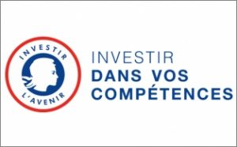

Unité formation
Cette unité regroupe toutes les actions de formation pour accéder ou se maintenir dans l’emploi :
- Communiquer
- Techniques de recherche d’emploi
- Compter
- Travailler en équipe
- Être autonome
- Utiliser des technologies de l’informatique et de la communication
- Hygiène et sécurité
- Autoformation

Marchés publics
PIC Axe 2
Acquérir et développer les savoirs et compétences clés nécessaires à l’insertion professionnelle.
Atteindre le niveau CLEA et obtenir la certification.
Définir et mettre en œuvre un projet professionnel adapté en lien avec le marché de l’emploi.
Se préparer à l’entrée en formation qualifiante ou pré-qualifiante et dans l’emploi.
 Méthodes : Alternance de cours théoriques, d’exercices et de mises en pratique, périodes en entreprise possibles.
Méthodes : Alternance de cours théoriques, d’exercices et de mises en pratique, périodes en entreprise possibles.
Modalités : Formation en présentiel exclusivement
Contenus : 1) Coaching renforcé tout au long de la formation; 2) remobilisation : Image de soi, maillage social, stratégie et méthodologie de la réussite; 3) Construction du projet et savoir-être professionnel; 4) formation aux compétences clés (référentiel CleA)
Evaluation : Evaluation en continu, évaluation CléA
Validation : Attestation de fin de formation, certificat CLEA
Pour plus d’informations : https://www.certificat-clea.fr
Entrée et sortie permanente, entre 150 et 900h selon les besoins. Rythme hebdomadaire : Temps partiel de 18 à 24 heures ou Temps complet de 30 à 35 heures
Délai d’accès : sous 8 jours sous réserve de places disponibles
Formation gratuite et rémunérée.
Session ouverte: 2021-2023
Fiche mise à jour le 14/04/2023
 Lieux de formation : Centre Social St Mauront, 77 Rue Félix Pyat – 13003 Marseille
Lieux de formation : Centre Social St Mauront, 77 Rue Félix Pyat – 13003 Marseille
8 Rue Ste Barbe, 13001 Marseille
Contact : Alexandre NASRI

OFII : Office français de l’Intégration et de l’Immigration
Formation linguistique pour des personnes étrangères qui souhaitent s’installer durablement en France et en provenance des pays tiers à l’Europe engagées dans un Contrat d’Intégration Républicaine (CIR) préconisant une formation linguistique obligatoire.
Objectifs : Acquérir les niveaux A1, A2 ou B1 français du CECRL ; Acquérir une autonomie sociale et professionnelle ; S’approprier les valeurs de la République Française.
 Méthodes et modalités : Formation collective en présentiel à temps partiel ou temps plein
Méthodes et modalités : Formation collective en présentiel à temps partiel ou temps plein
Contenus : Module Vie pratique ; Module Vie professionnelle ; Module Valeurs de la République ; Appui sur la modalité numérique en transversal ; Découverte de l’environnement social et culturel
Evaluation et validation : Test de positionnement réalisé sur le site de l’OFII ; Tests d’évaluation intermédiaire (sauf B1) et finaux ; Délivrance d’une attestation de réussite ou de participation.
Primo-arrivants des pays hors UE, se trouvant sur le territoire national moins de 5 ans en situation régulière (visa long séjour, récépissé ou titre de séjour) et envisageant de s’installer durablement en France. Sur prescription par l’OFII.
Toute l’année, durée de 50 à 600 heures selon les niveaux de A1 à B1.
Délais d’accès : Prescription par l’OFII.
Formation gratuite
Session ouverte : 2022-2024
Fiche mise à jour le 14/04/2023
 Lieux de formation :
Lieux de formation :
15 rue du Terras – 13002 Marseille
6 Rue de Verdun – 13 700 Marignane
43 Avenue de La Viste 13015 Marseille
Contact : Marina HALLIEZ

Prestations – Subventions
SAS FLE / EDA (suspendu depuis Juin 2022)
Remise à niveau sur les savoirs de base en partenariat avec E2C Marseille pour les jeunes étrangers, diplômés dans leur pays d’origine et inscrits à l’E2C
Objectifs : Acquisition des bases de la communication en français ; Acquisition des compétences Clés ; préparer un parcours à l’E2C
 Méthodes et modalités : Formation collective en présentiel ou en auto-formation guidée sur la plateforme « EDA » de l’Ecole de la 2eme Chance.
Méthodes et modalités : Formation collective en présentiel ou en auto-formation guidée sur la plateforme « EDA » de l’Ecole de la 2eme Chance.
Contenus :
- Français Langue Etrangère, programme individualisé en fonction des besoins
- Vocabulaire de la vie quotidienne et professionnelle
- Découverte de l’environnement social et culturel
Evaluation en continu, les stagiaires possèdent un compte sur la plateforme EDA qui permet de suivre en temps réel leur niveau de réussite ; Attestation de Compétences en fin de parcours
Jeunes 18-26 ans, inscrits à l’E2C Les pré-requis sont définis par E2C.
Inscription par E2C : https://e2c-marseille.fr/sinscrire
Entrées Sorties permanentes pour un groupe de 8 à 12 personnes
Durée individualisée de 1 à 6 mois, à temps plein
Session ouverte entre le 01/01/2022 et le 30/09/2022
Formation gratuite
Fiche mise à jour le 06/07/2022
 Lieu de formation : CIERES – 9 rue Montolieu 13002 Marseille
Lieu de formation : CIERES – 9 rue Montolieu 13002 Marseille
Contact : Marina HALLIEZ
CEPAJ
Action linguistique de formation, d’éducation et d’insertion en amont des dispositifs de droit commun de l’Education Nationale ou de la Formation professionnelle
Objectifs : Accompagner dans l’intégration sociale ; Acquérir les bases de la langue française ; valoriser les savoirs scolaires ; découvrir l’environnement social et culturel
Méthodes et modalités : Formation collective en présentiel ou en auto-formation guidée. Entretiens individuels d’accompagnement
Contenus : Ateliers de savoirs de bases : Français ; Raisonnement Logique ; Culture générale ; TICE. Ateliers spécifiques : Découverte du territoire ; accès aux Droits ; Activité Sportive…
Evaluation en continu, le formateur évalue en fin de chaque séquence les compétences acquises, attestation de compétences. Certification : DELF de A1 à B1 selon le niveau de sortie et attestation de fin de formation
 Jeunes mineurs isolés, primo-arrivants de 16 à 18 ans (arrivés depuis moins de 5 ans sur le territoire français), Sur prescription du CASNAV de l’Education Nationale. Effectif de 20 en entrée sortie permanente.
Jeunes mineurs isolés, primo-arrivants de 16 à 18 ans (arrivés depuis moins de 5 ans sur le territoire français), Sur prescription du CASNAV de l’Education Nationale. Effectif de 20 en entrée sortie permanente.
Du 5 septembre 2022 au 30 juin 2023, de 4 à 6 demi-journées par semaine
Démarrage sous une semaine dans la limite des places disponibles.
Session ouverte entre le 05/09/2022 et le 30/06/2023
Formation gratuite
Fiche mise à jour le 14/04/2023
 Lieu de formation : CIERES – 9 rue Montolieu 13002 Marseille
Lieu de formation : CIERES – 9 rue Montolieu 13002 Marseille
Contact : Nabil ALLIK


ETOIL : Espace Territorialisé Ouvert d’Insertion par les Langues
Formation Linguistique et d’accompagnement à l’emploi
Objectifs : Maîtriser la langue française pour rebondir par un transfert de compétences sur un emploi qualifié. L’action repose sur le bilinguisme (Langue française/langue d’origine : RUSSE / ARABE / ESPAGNOL / ANGLAIS)
Méthodes et modalités : Formation collective en présentiel en entrées-sorties permanentes et parcours individualisés ; Entretiens individuels d’accompagnement
Contenus : Ateliers hebdomadaires : 2 ateliers collectifs bilingues à visée professionnelle; 1 atelier collectif emploi
Evaluation en continu, le formateur évalue en fin de chaque séance les compétences acquises ; attestation d’acquisition des compétences et de fin de formation.
 Publics d’origine étrangère, majeurs, demandeurs d’emploi, hautement scolarisés et/ou qualifiés dans leur pays d’origine, en situation régulière et ayant pour objectif l’insertion socio-professionnelle..
Publics d’origine étrangère, majeurs, demandeurs d’emploi, hautement scolarisés et/ou qualifiés dans leur pays d’origine, en situation régulière et ayant pour objectif l’insertion socio-professionnelle..
45 places en entrées et sorties permanentes, durée individualisée, effectif de 15 en simultané
Session ouverte entre le 01/01/2023et le 31/12/2023 rythme de 3 demi-journées par semaine plus des entretiens d’accompagnement individuel
Démarrage sous une semaine dans la limite des places disponibles.
Formation gratuite
Fiche mise à jour le 14/04/2023
 Lieu de formation : CIERES – 15 rue du Terras 13 002 Marseille
Lieu de formation : CIERES – 15 rue du Terras 13 002 Marseille
Contact : Martin DUCASSE


SPEED Restauration collective
Objectifs : SPEED vise l’acquisition et la reconnaissance de savoirs, de connaissances et de compétences permettant d’accéder à un emploi ou une entrée en qualification dans les métiers de la restauration.
Méthodes et modalités : Formation collective en présentiel à temps plein, individualisée dans son contenu en fonction de la synthèse du positionnement
Contenus : Remise à niveau appliquée à la filière (4 semaines ; Plateau technique restauration (4 semaines) ; Immersion en entreprise (4 semaines) ; Certification et recherche d’emploi (2 semaines) ; Accompagnement individuel et collectif vers l’emploi (6 mois)
Evaluation en continu, délivrance d’une attestation de fin de formation et de compétences
Certification : HACCP et CléA
 18 ans et +, issues des quartiers prioritaires de la Ville (QPV), et/ou habitants du site Euromed, et/ou bénéficiaires du RSA, et /ou accompagnés dans le cadre d’un parcours
18 ans et +, issues des quartiers prioritaires de la Ville (QPV), et/ou habitants du site Euromed, et/ou bénéficiaires du RSA, et /ou accompagnés dans le cadre d’un parcours
Pré-requis :
- Être motivé pour travailler dans la filière restauration
- Savoir lire, écrire et compter
Session annuelle reconductible
27 février – 30 juin 2023
2ème semestre 2023 (accompagnement complémentaire)
Durée totale 10 mois
Formation gratuite
Fiche mise à jour le 07/06/2023
 Lieu de formation : CIERES – 8 rue Sainte-Barbe – 13001 Marseille
Lieu de formation : CIERES – 8 rue Sainte-Barbe – 13001 Marseille
Contact : Vanessa FAVRE
METICE : Module Emploi Techniques d’Information de Communication pour l’Enseignement
Objectifs : Développer ses compétences en informatique et/ou sur le numérique dans un objectif d’insertion socio-professionnelle.
Méthodes et modalités : Formation collective en présentiel ou en auto-formation guidée
Contenus : Fonctions de base pour utiliser un ordinateur ; Saisir et mettre en forme du texte ; effectuer une recherche sur le web ; Repérer et utiliser les sites pour une recherche d’emploi ; Utiliser la fonction de messagerie ; TRE via l’outil informatique.
Evaluation en continu, le formateur évalue en fin de chaque séance les compétences acquises. Attestation d’acquisition de compétences numériques en fin de formation.
Certifications : CléA numérique et PCIE possible
 Habitants de Marseille, centre-ville et sa périphérie Nord, en situation de recherche d’emploi.
Habitants de Marseille, centre-ville et sa périphérie Nord, en situation de recherche d’emploi.
METICE est ouvert au public adulte, demandeur d’emploi, inscrit sur une formation au CIERES, sans pré-requis.
100 places annuelles en entrées et sorties permanentes, une demi-journée par semaine. Délai d’accès selon les places disponibles
Session ouverte du 01/01/2023 au 31/12/2023
Formation gratuite
Fiche mise à jour le 14/04/2023
 Lieu de formation : CIERES – 8 rue St Barbe – 13001 Marseille
Lieu de formation : CIERES – 8 rue St Barbe – 13001 Marseille
Contact : Martin DUCASSE
MITIC : Module d’Initiation aux Techniques d’Information et de Communication
Objectifs : Développer ses compétences en informatique et/ou sur le numérique dans un objectif d’insertion socio-professionnelle.
Méthodes et modalités : Formation collective en présentiel ou en auto-formation guidée
Contenus : Fonctions de base pour utiliser un ordinateur ; Saisir et mettre en forme du texte ; effectuer une recherche sur le web ; Repérer et utiliser les sites pour une recherche d’emploi ; Utiliser la fonction de messagerie ; TRE via l’outil informatique.
Evaluation en continu, le formateur évalue en fin de chaque séance les compétences acquises. Attestation d’acquisition de compétences en fin de formation
Certification : PCIE ou CléA numérique possible
 Habitants de Marseille, centre-ville et sa périphérie Nord, en situation de recherche d’emploi.
Habitants de Marseille, centre-ville et sa périphérie Nord, en situation de recherche d’emploi.
MITIC est ouvert au public 16-29 ans, demandeur d’emploi, inscrit sur une formation au CIERES, sans pré-requis.
100 places annuelles en entrées et sorties permanentes, une demi-journée par semaine. Délai d’accès selon les places disponibles
Session ouverte du 01/01/2023 au 31/12/2023
Formation gratuite
Fiche mise à jour le 14/04/2023
 Lieu de formation : CIERES – 8 rue St Barbe – 13001 Marseille
Lieu de formation : CIERES – 8 rue St Barbe – 13001 Marseille
Contact : Martin DUCASSE
JANUS : JArdins du Numérique par Secteur
Objectifs :
- Former des opérateurs du numérique accrédités par des certifications professionnelles (CleA Numérique / PCIE / Certificat de compétences).
- Préparer à une entrée en formation qualifiante dans le secteur du numérique / informatique.
- Proposer aux entreprises une montée en compétences numériques des candidats et salariés.
Secteurs visés : Infrastructure et Réseau, Technologies du Web et création de contenus, Bureautique et environnement Windows
Méthodes et modalités : Formation collective en présentiel ou en auto-formation guidée. Entretiens individuels d’accompagnement.
Contenus : Actualisation de connaissances et compétences (expression écrite et orale, mathématiques, anglais professionnel, TICE…) ; Spécialisation selon le secteur visé ; Découverte du marché du travail et du milieu professionnel ; Accompagnement personnalisé dans la formation et à l’emploi
Evaluation en continu, le formateur évalue en fin de chaque séance les compétences acquises
Certifications : PCIE, CleA numérique, attestation d’acquisition de compétences.
– Jeunes et adultes sans qualification ni diplôme et jusqu’à Bac, BAC+1
– Publics ayant un projet professionnel dans les métiers du Numérique
Sorties et entrées permanentes, durée de 5 mois maximum 2,5 jours par semaine, 12 places
 Session du 5/07/2023 au 23/12/2023
Session du 5/07/2023 au 23/12/2023
Délai d’accès selon les places disponibles
Formation gratuite
Fiche mise à jour le 14/04/2023
 Lieu de formation : CIERES – 8 rue St Barbe – 13001 Marseille
Lieu de formation : CIERES – 8 rue St Barbe – 13001 Marseille
Contact : Martin DUCASSE
Formation individualisée salariés
Objectifs : Atteindre la certification CleA
Contenus : plan individualisé de formation parmi les compétences du référentiel CleA (communication en français ; utilisation des règles de base de calcul et du raisonnement mathématique ;utilisation des techniques usuelles de l’information et de la communication numérique ; aptitude à travailler dans le cadre de règles définies d’un travail en équipe ; aptitude à travailler en autonomie et à réaliser un objectif individuel ; capacité d’apprendre à apprendre tout au long de la vie ; maîtrise des gestes et postures et le respect des règles d’hygiène, de sécurité et environnementales élémentaires)
Méthodes et modalités : Formation collective en présentielle (pédagogie active)
Parcours personnalisé selon les besoins identifiés au cours d’une évaluation initiale de la certification ou d’un test de positionnement.
Certification : Evaluation initiale et finale CleA
 Personnes peu qualifiées, n’ayant pas de certification professionnelle ou une certification obsolète
Personnes peu qualifiées, n’ayant pas de certification professionnelle ou une certification obsolète
Pré-requis : Niveau souhaité : savoir lire et écrire ; Sur demande de l’employeur.
Période et durée de formation définie en tripartite Employeur/salarié/CIERES, démarrage possible dans les 15 jours qui suivent l’accord de financement.
Tarif négocié entre l’entreprise, l’OPCO le cas échéant.
Gratuit pour le bénéficiaire, mobilisation du CPF possible.
Fiche mise à jour le 14/04/2023
 Lieu de formation : CIERES – Immeuble Espace Colbert 8 Rue Sainte Barbe 13001 Marseille
Lieu de formation : CIERES – Immeuble Espace Colbert 8 Rue Sainte Barbe 13001 Marseille
Contact : Myriam NASRI
Formation individualisée salariés
« COMPREHENSION ET EXPRESSION EN LANGUE FRANCAISE »
Objectifs : acquérir les compétences linguistiques nécessaires fondamentales pour faciliter l’évolution professionnelle ; Consolider un niveau A1 (ou A2) à l’oral et à l’écrit, progresser vers le niveau A2 (ou B1) du Cadre européen commun de référence pour les langues (CECRL)
Contenus : plan individualisé de formation parmi les compétences du référentiel CECRL
Compréhension et expression orales
COMPRENDRE (écouter) : Comprendre des messages simples ; Comprendre des consignes/messages /notes/documents plus élaborés en contexte professionnel.
PARLER (prendre part à une conversation / s’exprimer oralement en continu) : Enrichir son vocabulaire ; Renforcer ses compétences syntaxiques ; Donner son point de vue ; Poser une question pour comprendre ; Verbaliser ses points forts.
Compréhension et expression écrites
COMPRENDRE (lire) : Comprendre des messages simples ; Comprendre des messages/notes/documents plus élaborés en contexte professionnel.
ECRIRE : Renforcer sa maîtrise de la syntaxe, des règles d’orthographe d’usage, et des conjugaisons les plus courantes ; Enrichir son vocabulaire ; Utiliser un vocabulaire familier et lié à l’environnement professionnel ; Produire des phrases simples ; Produire des textes courts structurés ; Acquérir des méthodes efficaces de relecture et d’auto-correction.
Méthodes et modalités : Formation collective en présentiel (pédagogie active)
Parcours personnalisé selon les besoins identifiés au cours d’une évaluation initiale de la certification ou d’un test de positionnement.
Certification : Attestation de formation et bilan de formation comprenant une évaluation du niveau CECRL.
 Personnes peu qualifiées rencontrant des difficultés de langue française dans l’exercice de leur emploi
Personnes peu qualifiées rencontrant des difficultés de langue française dans l’exercice de leur emploi
Pré-requis : Niveau souhaité : savoir lire et écrire.
Période et durée de formation définie en tripartite Employeur/salarié/CIERES, démarrage possible dans les 15 jours qui suivent l’accord de financement.
Tarif négocié entre l’entreprise, l’OPCO le cas échéant.
Gratuit pour le bénéficiaire, mobilisation du CPF possible.
Fiche mise à jour le 14/04/2023
 Lieu de formation : CIERES – Immeuble Espace Colbert 8 Rue Sainte Barbe 13001 Marseille ; possible en intra.
Lieu de formation : CIERES – Immeuble Espace Colbert 8 Rue Sainte Barbe 13001 Marseille ; possible en intra.
Contact : Myriam NASRI


Vous ne trouvez pas ce que vous recherchez ?
Venez rencontrer nos équipes
permanence D'accueil sans rendez-vous
TOUS LES JEUDIS DE 14h à 17h